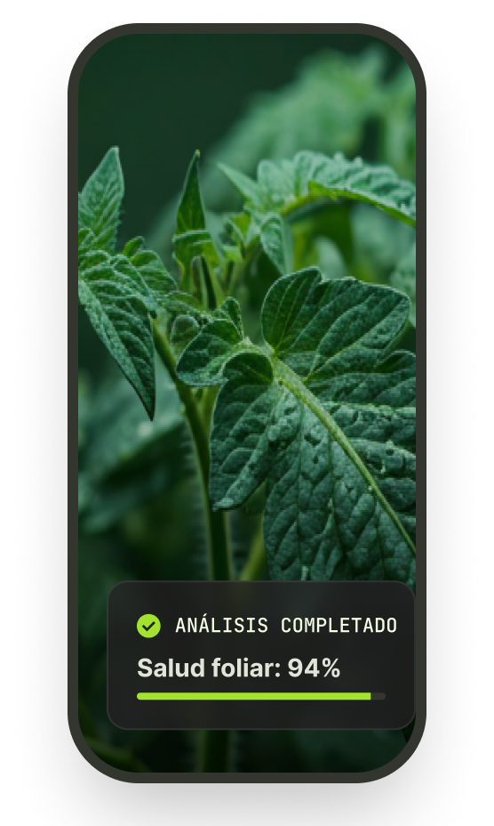
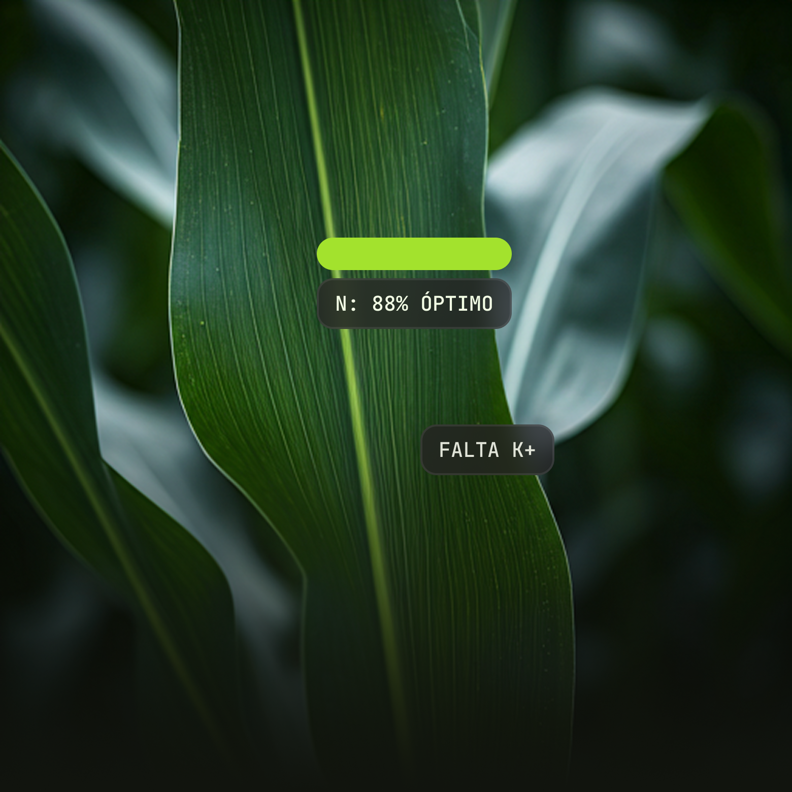
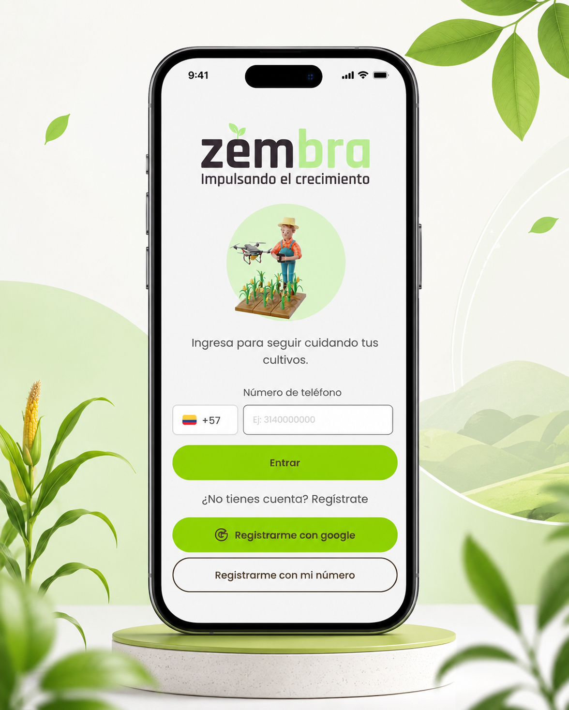

AGRITECH · IA PARA CULTIVOS
24/7
Monitoreo
IA
Diagnóstico
Agro
Soporte experto
El futuro de tus cultivos, hoy
Diagnóstico visual, monitoreo del estado del cultivo y recomendaciones accionables para tomar decisiones más rápidas en campo.

Análisis completado
Salud foliar: 94%
Recomendación
Revisar hoja afectada
Decisiones con evidencia
Menos incertidumbre en el cultivo
Zembra convierte una foto del cultivo en información práctica para detectar síntomas, priorizar acciones y saber cuándo consultar a un experto.
Proceso simple
¿Cómo funciona?
Un flujo pensado para que el agricultor pueda obtener una orientación clara desde el celular.
01
Toma una foto
Captura la hoja, tallo o zona afectada del cultivo con buena luz.
02
Análisis IA
El sistema identifica patrones visuales asociados a plagas, enfermedades o estrés.
03
Diagnóstico claro
Recibe un resultado fácil de entender con posibles causas y acciones iniciales.
04
Apoyo experto
Conecta con agrónomos cuando el caso requiera acompañamiento especializado.
Diagnóstico visual
Inteligencia que entiende la tierra
Detecta señales tempranas en hojas y cultivos para actuar antes de que el problema avance y afecte la productividad.
- Lectura visual de síntomas del cultivo.
- Resultados pensados para agricultores y agrónomos.
- Historial para comparar la evolución del lote.

Riesgo detectado
Revisión recomendada
Beneficios
Una app para cuidar tu cultivo de principio a fin
Monitoreo 24/7
Consulta el estado del cultivo y prioriza revisiones sin depender de visitas constantes.
Ahorro de costos
Mejora el uso de insumos, agua y fertilizantes con decisiones más oportunas.
Respuestas rápidas
Obtén una orientación inicial en segundos para saber qué revisar primero.
Red de expertos
Deriva casos complejos a agrónomos para una revisión más precisa.
Datos del cultivo
Registra eventos y usa el historial para comparar decisiones y resultados.
Nube segura
Información protegida, organizada y disponible para dar seguimiento al lote.
Zembra App
Tu cultivo en la palma de tu mano
Disponible próximamente para Android. Diseñada para que la información agrícola sea más clara, rápida y útil en campo.
GET IT ON Google Play